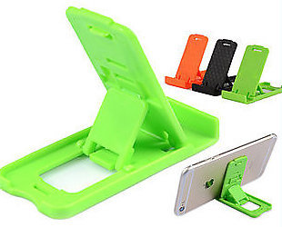
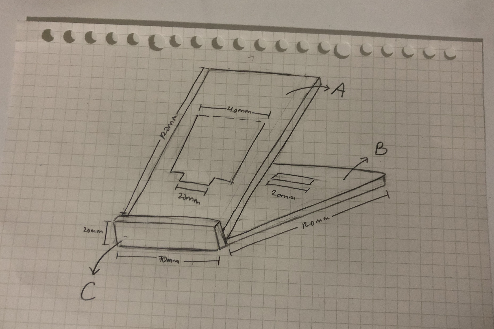
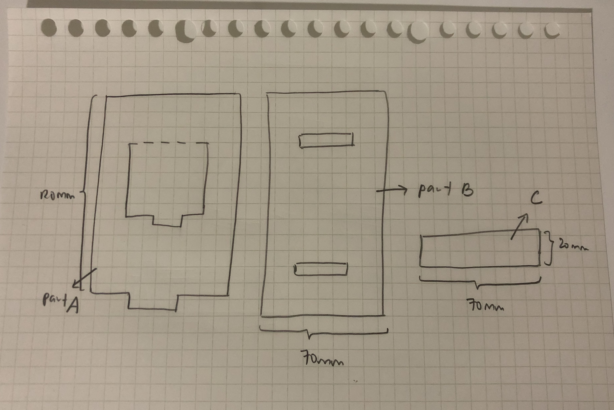
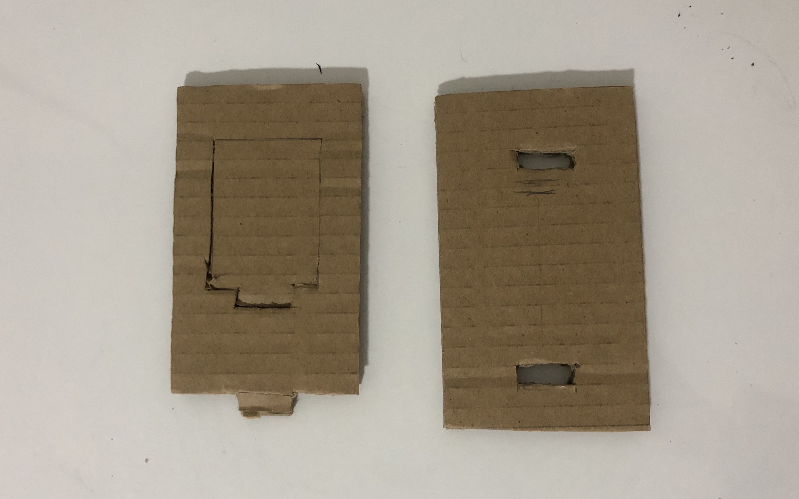
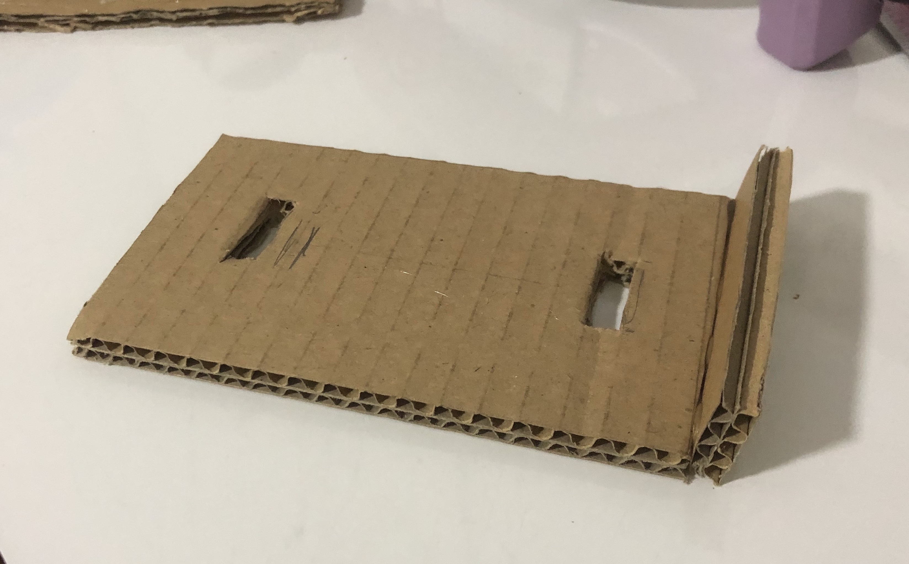
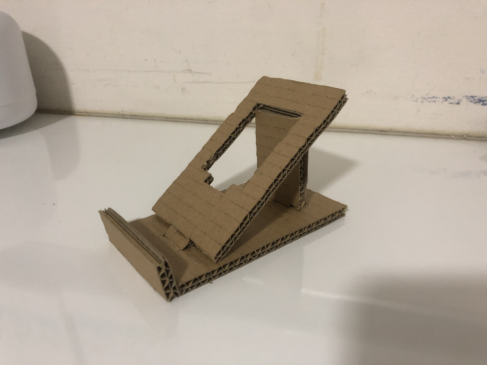
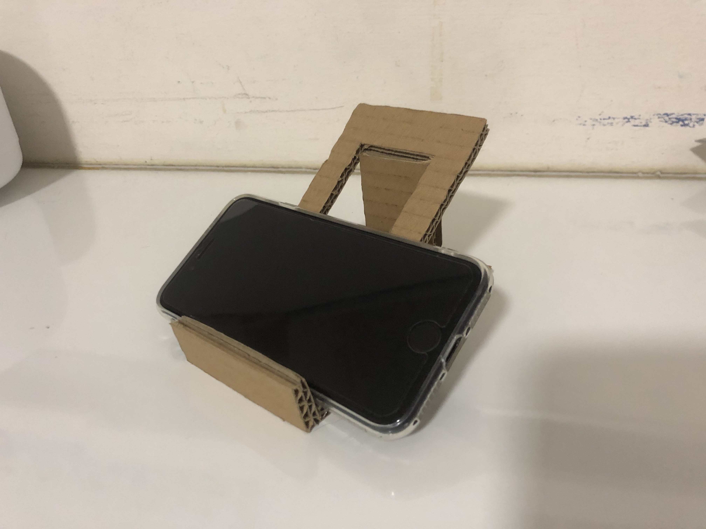

Prototyping
| For my first prototype, I intend to make a phone stand. Some properties that I want the phone stand to be is for it to be foldable and portable. It also has to be able to hold my phone both vertically and horizontally without toppling. I was inspired by this phone stand. You can view the phone stand from the original website here. This phone stand im referencing from is collapsable and it uses slots to make it stand. Hence, I thought I could incorparate the slots and tabs into my phone stand. |
 |
Firstly, I created a sketch of how I wanted my phone stand to look like. As you can see on the bottom, this was how my sketch of my first prototype looked like. I divided my parts into parts A, B and C so that it would be easier for me to visualize and piece together. I also have indicated the dimensions for each part so that my slots can be inserted accurately. This is also to let the different parts be of the same size and be proportionate to each other. For example, I need my breadth of my part A and B to match up with my length of my part C. Hence, I set a dimension of 120mm for all three sides so that they will be of the same size. On the bottom right, you can see a breakdown of the different parts I needed. The way I planned my phone stand is having 2 slots on my part B. One of them is to set the height of the stand, while the other one helps keep my upper part stay in place.
|  |  |
Then I started to create my prototype. I used cardboard and cut the pieces according to the measurements in my sketch. As you can see below, this was how my pieces looked. Also, I used hot glue to piece together the part C, which is the phone stopper at the front of the stand.
|  |  |
I have finished with my first prototype! As you can see I have scored a line so that the cardboard can fold in with ease into the slot. With the two slots in place, my phone stand is really stable and held in place.
|  |  |
Here is a recap of how I did this phone stand:
- Sketch out the phone stand. Remember to include the dimensions so that the work after will be easier.
- Cut out the cardboard pieces accordingly. Be accurate and do not cut free-handedly.
- Cut out the slot holes and ensure that the tabs are able to fit in snug. Score a line at the support so that it will fold easier.
- Hot glue gun the stopper at the front of the phone stand.
What worked in my first prototype was my idea of using two slots to hold the stand in place. The phone stand was actually really stable and it was able to hold my phone. My idea of scoring the cardboard to bend it easier also worked and now the support piece is able to bend without ruining the shape of the rest. In my next prototype, I am going to make my tab at the bottom be at a more slanted angle, so that it will fit in more snug. During the process of making this, I tried to score the tab so that it would bend to slot in better. While it did bend in, the tab became very fragile and it broke. Hence, I had to hot glue gun a tab onto the bottom of the piece. Also, while the phone stand is collapsable, the stopper at the front cannot be moved, making it not as portable and as I wanted it to be. Maybe I can think of better ways to improvise that part of my phone stand. The other downside of this is when I take it apart, it is separated into 2 pieces. This might be inconvenient to carry around hence I have to figure out how to make it all in one piece.